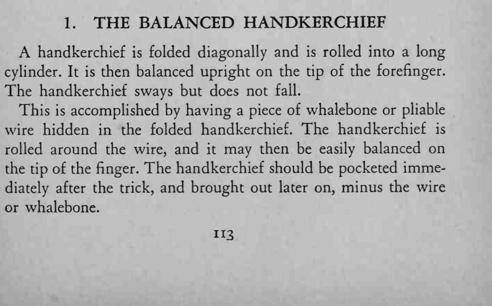

一块手帕折成斜角、卷成长筒，竟能直立在食指指尖上，左右摇晃却不倒。
手帕要卷得紧、铁丝要留在中心，才立得稳。

A handkerchief is folded diagonally and is rolled into a long cylinder. It is then balanced upright on the tip of the forefinger. The handkerchief sways but does not fall. This is accomplished by having a piece of whalebone or pliable wire hidden in the folded handkerchief. The handkerchief is rolled around the wire, and it may then be easily balanced on the tip of the finger. The handkerchief should be pocketed immediately after the trick, and brought out later on, minus the wire or whalebone.